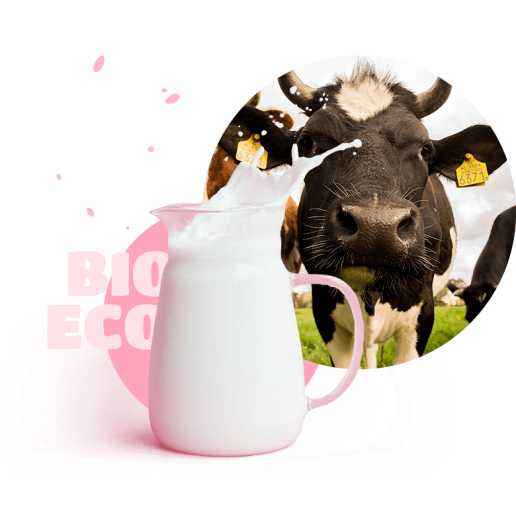

<link rel="stylesheet" href="../sass/main.css" />

<section class="about">
  <div class="about__background-image"></div>
  <div class="about__container">
    <div class="about__title">
      <p class="about__label">tradition and love</p>
      <h2 class="about__header">how it’s made?</h2>
    </div>
    <div class="about__main">
      <div class="about__bio-eco">
        
      </div>
      <div class="about__description">
        <p class="about__info">
          Fusce ut velit laoreet, tempus arcu eu, molestie tortor. Nam vel justo cursus, faucibus
          lorem eget, egestas eros. Maecenas eleifend erat at justo fringilla.
        </p>
        <p class="about__info about__info--color">
          Curabitur lacinia enim at ex blandit, vel pellentesque odio elementum. Mauris rhoncus orci
          in imperdiet placerat. Vestibulum euismod nisl suscipit ligula volutpat, a feugiat urna
          maximus. Cras massa nibh, tincidunt.<br /><br />Aliquam erat volutpat. Aenean accumsan.
        </p>
        <button class="btn btn__primary about__btn">
          Read more
          <svg class="btn__icon">
            <use xlink:href="../images/icons.svg#icon-arrow" width="6.5" height="10"></use>
          </svg>
        </button>
      </div>
    </div>
  </div>
</section>
